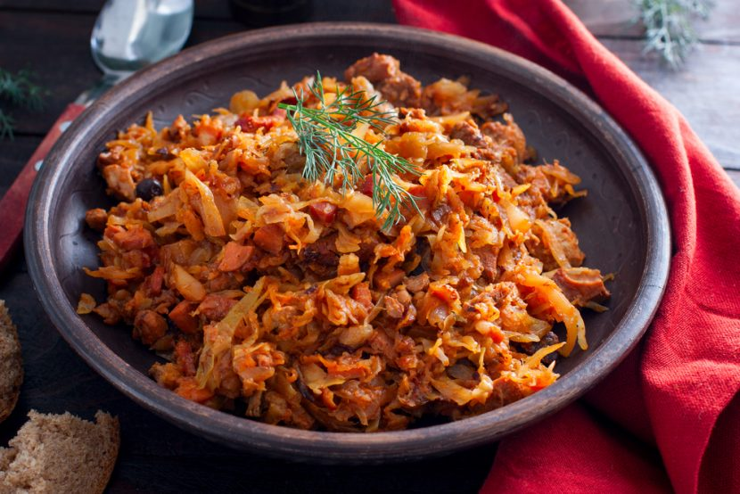

Bigos

Description
Making Polish bigos involves stewing sauerkraut, white cabbage, meat and sausage along with a handful of spices to create a warming, hearty dish that’s moreishly delicious.
Bigos stew is incredibly simple to make, requires very little effort and makes a fantastic potluck party dish.
Ingrediants
- Sauerkraut
- White cabbage
- Meat
- Sausage
- Porcini Mushrooms
- Prunes
Instructions
- In the pot heat up 3 tablespoons of oil, add the bay leaf, caraway seeds, allspice and juniper berries and onion. Fry gently for 3 minutes stirring often.
- Push the onion mixture to the side and add the chicken pieces. Fry for 2 minutes on each side.
- Add the sauerkraut, cabbage, prunes, mushrooms, paprika, marjoram, tomato paste and half of the water.
- Stir, close the lid and bring the mixture to the boil then simmer gently for 1 hour stirring occasionally.
- In a pan fry the chopped sausage in 1-2 tablespoons of oil until lightly browned.
- Add sausage into the stew and cook for 1 more hour. Add a little more water if needed.
- Remove the bigos from the heat and take out the chicken. Separate the meat from the bone and place the meat back into the pot.
- Stir and serve!
Return to top
Return to Main Page